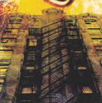

Home Artist links Label link

Alamaailman Vasarat - Kaarmelautakunta
| Artist: | Alamaailman Vasarat |
| Title: | Kaarmelautakunta |
| Label: | Silence SLC 014 |
| Length(s): | 45 minutes |
| Year(s) of release: | 2005 |
| Month of review: | [12/2006] |
Line up
Jarno Sarkula - soprano & tenor saxes, bass clarinet
Tuukka Helminen - cello
Teemu Hanninen - drums, percussion
Miikka Huttunen - pump organ, grand piano
Erno Haukkala - trombone, slide trumpet, tuba
Marko Manninen - cello
Tracks
| 1) | Kivitetty Saatana | 4.48
|
| 2) | Vasaraasuakaubeb | 5.50
|
| 4) | Hamarapuolella | 5.15
|
| 5) | Astiatehdas | 3.10
|
| 6) | Vanha Lapsuudenystava | 6.14
|
| 8) | Lentava Mato | 3.41
|
Summary
The music
Before there was sanity and normalcy, there was Alamaailman Vasarat. The music is mostly pushed on by assorted saxes creating some sort of anarcho folk polk prog that is pretty much unlike other music. Even though the sax sound might be reminiscent of Urban Sax at times, the compositions wipe this association away with ease. Great ease, one might say.
The music is highly energetic most of the time, although Vanha Lapsuudenystava (oh, how I love these Finnish titles) has a melancholic, pondering quality. Olisimme Uineet Vielakin Pidemalle starts slowly and quietly and gradualy builds towards an eclectic final in which saxes and piano strive for the top. This track does have a feeling akin to Urban Sax, with the saxes sounding as sonorous as they do in that band. Final track Jaa, Hyva Mieli has a heavy feel, sort of Apocalyptica with less cellos and more sax. Astiatehdas starts out with a bit of a rocky feel, due to the guitar, but before too long the polka sax come along, making it too into a different sort of Apocalyptica.
Conclusion
I find it hard to fully describe Alamaailman Vasarat. Like so many other bands they could be categorized avant garde or maybe even avant prog, albeit it with a twist. But still they are also so different from this, there is none of the neuroticism so often heard, whilst there is a certain peace in the tracks, even in the faster ones. The wild authenticity of what's on offer here is so apparent and swooping that you can't help bouncing along with the faster ones, shedding the odd tear on the melancholic ones. Still, this is for the un-squeamish, and a feast for them it is.
© Roberto Lambooy